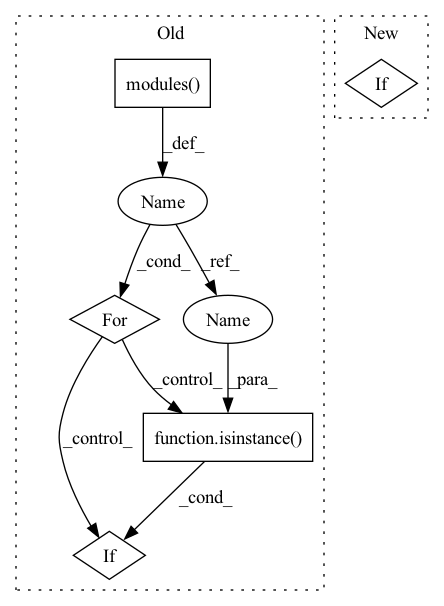

Pattern ID :1561
Before Change
prior_prob = 0.01
bias_value = -math.log((1 - prior_prob) / prior_prob)
for modules in self.conf:
for l in modules.modules():
if isinstance(l , nn.Conv2d) :
torch.nn.init.normal_(l.weight, std=0.01)
torch.nn.init.constant_(l.bias, bias_value)
def forward(self, x):After Change
self.backbone = ResNetBackbone(depth=18, pretrained=True)
channels = (256, 512)
self.fea_channel = 256
elif :
from models.backbone.resnet_backbone import ResNetBackbone
self.backbone = ResNetBackbone(depth=34, pretrained=True)
channels = (256, 512)
self.fea_channel = 256In pattern: SUPERPATTERN
Frequency: 3
Non-data size: 5
Instances Fragment ID: 4217734
Project Name: zhangheng19931123/mutualguide
Commit Name: a1922567db242ed73012d090b249066d1159a902
Time: 2021-06-01
Author: heng.zhang@irisa.fr
File Name: models/detector.py
M Class Name: Detector
N Class Name: Detector
M Method Name: __init__(5)
N Method Name: __init__(5)
M Parent Class: nn.Module
N Parent Class: nn.Module
M File Name: models/detector.py
N File Name: models/detector.py
M Start Line: 33
M End Line: 88
N Start Line: 44
N End Line: 103
Before Change
prior_prob = 0.01
bias_value = -math.log((1 - prior_prob) / prior_prob)
for modules in self.conf:
for l in modules.modules():
if isinstance( l, nn.Conv2d) :
torch.nn.init.normal_(l.weight, std=0.01)
torch.nn.init.constant_(l.bias, bias_value)
def forward(self, x):After Change
self.num_anchors = 6
// Backbone network
if backbone == "resnet18":
from models.backbone.resnet_backbone import ResNetBackbone
self.backbone = ResNetBackbone(depth=18, pretrained=True)
channels = (256, 512)
self.fea_channel = 256 Fragment ID: 4217735
Project Name: zhanghengdev/mutualguide
Commit Name: a1922567db242ed73012d090b249066d1159a902
Time: 2021-06-01
Author: heng.zhang@irisa.fr
File Name: models/detector.py
M Class Name: Detector
N Class Name: Detector
M Method Name: __init__(5)
N Method Name: __init__(5)
M Parent Class: nn.Module
N Parent Class: nn.Module
M File Name: models/detector.py
N File Name: models/detector.py
M Start Line: 33
M End Line: 88
N Start Line: 44
N End Line: 103
Before Change
self.avgpool = nn.AdaptiveAvgPool3d((1, 1, 1))
self.fc = nn.Linear(block_inplanes[3] * block.expansion, n_classes)
for m in self.modules():
if isinstance( m, nn.Conv3d) :
nn.init.kaiming_normal_(m.weight, mode="fan_out", nonlinearity="relu")
elif isinstance(m, nn.BatchNorm3d):
nn.init.constant_(m.weight, 1)
nn.init.constant_(m.bias, 0)After Change
self.avgpool = nn.AdaptiveAvgPool3d((1, 1, 1))
self.fc = nn.Linear(block_inplanes[3] * block.expansion, n_classes)
if init_weights:
initialize_weights(self)
// for m in self.modules():
// if isinstance(m, nn.Conv3d):
// nn.init.kaiming_normal_(m.weight, mode="fan_out", nonlinearity="relu") Fragment ID: 4217736
Project Name: liaorongfan/deeppersonality
Commit Name: 5390c782cd40874b4d81897a78abc8f6eb7f573a
Time: 2021-12-14
Author: 15670381505@163.com
File Name: dpcv/modeling/networks/resnet_3d.py
M Class Name: ResNet
N Class Name: ResNet
M Method Name: __init__(12)
N Method Name: __init__(11)
M Parent Class: nn.Module
N Parent Class: nn.Module
M File Name: dpcv/modeling/networks/resnet_3d.py
N File Name: dpcv/modeling/networks/resnet_3d.py
M Start Line: 149
M End Line: 156
N Start Line: 124
N End Line: 161